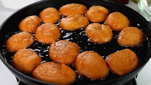

S - s
 sẹ̀kẹ̀ẹ́ n. [sɛ̀kɛ̌ː] A popular, nutritious, and savory street food made from peeled and ground beans (typically black-eyed peas) mixed with onions, peppers, and seasonings Made with vegetables oil. sẹ̀ẹ̀kẹ́ dùn-ùn ju kengbe lọ sẹ̀ẹ̀kẹ́ is sweeter than kengbe.
sẹ̀kẹ̀ẹ́ n. [sɛ̀kɛ̌ː] A popular, nutritious, and savory street food made from peeled and ground beans (typically black-eyed peas) mixed with onions, peppers, and seasonings Made with vegetables oil. sẹ̀ẹ̀kẹ́ dùn-ùn ju kengbe lọ sẹ̀ẹ̀kẹ́ is sweeter than kengbe.
 |